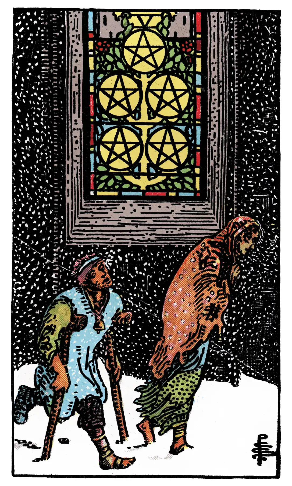

Five of Pentacles

A.E.W.
Upright
The card foretells material trouble above all, whether in the form illustrated – that is, destitution – or otherwise. For some cartomancists, it is a card of love and lovers – wife, husband, friend, mistress; also concordance, affinities. These alternatives cannot be harmonized.
Additionally
Conquest of fortune by reason.
Recurrence
2 - Vigils.
3 - Determination.
4 - Regularity.
Reversed
Disorder, chaos, ruin, discord, profligacy.
Additionally
Troubles in love.
Recurrence
2 - Reverse.
3 - Hesitation.
4 - Order.
S.L.M.M.
Upright
Lover or Mistress, Love, Sweetness, Affection, Pure and Chaste Love
Reversed
Disgraceful Love, Imprudence, License, Profligacy.
Description
Two mendicants in a snow-storm pass a lighted casement.